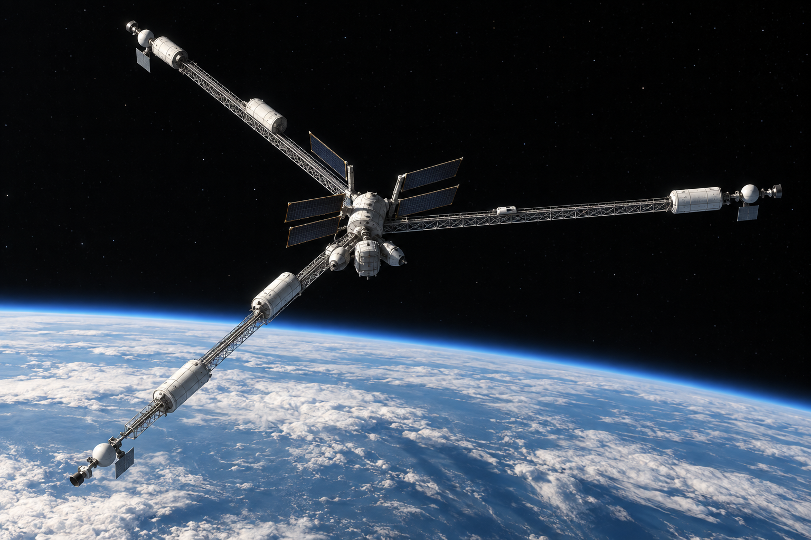
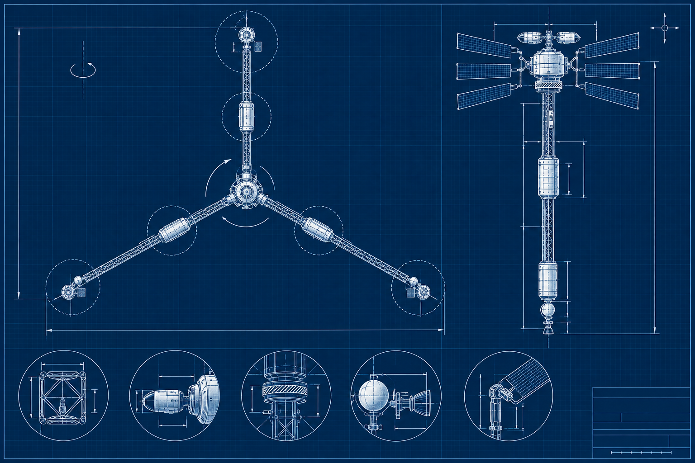
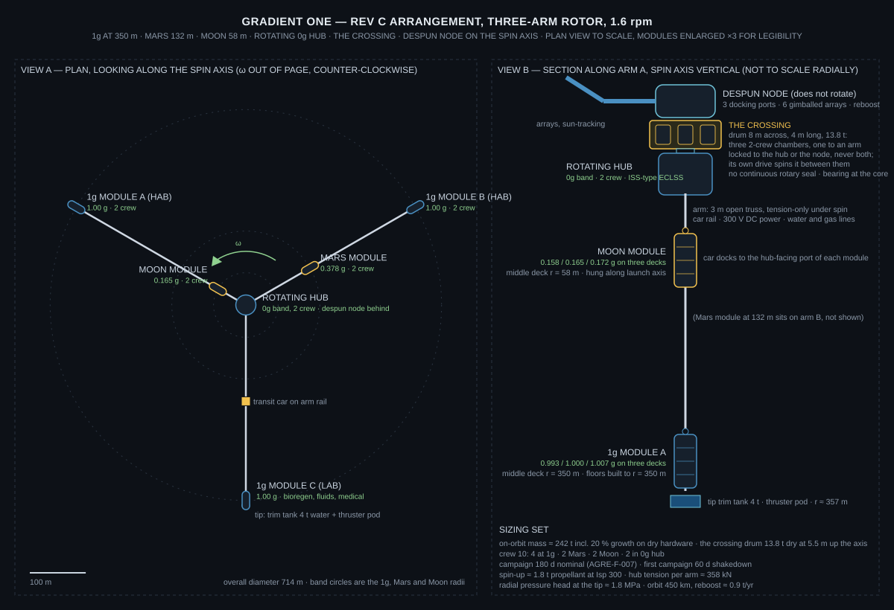
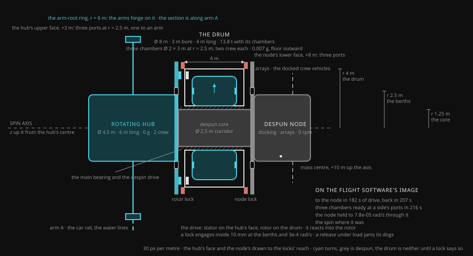
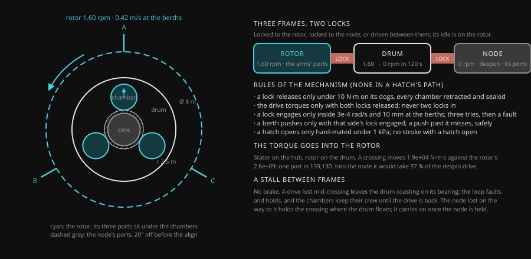

Validation Platform • Rev C, November 2026: Rev B of September with the crossing taken into the vehicle, read against its model and flight software
Gradient One
A three-arm rotating research platform that places 1g, Mars gravity, lunar gravity and a rotating microgravity hub in one vehicle at one spin rate, for six-month crewed campaigns. It exists to produce the dataset that the Artificial Gravity Requirements Evaluation defines, and to retire the rotating-structure risks that Aegis Station carries as assumptions.
Who this is for
| Audience | What they get from G1 | Where to read more |
|---|---|---|
| Physiology researchers | Bone, cardiovascular, ocular and plant endpoints at lunar and Mars gravity, against a 1g control in the same vehicle. | AGRE‑F‑001, F‑007, F‑008 |
| Six-month exposures per subject; five campaigns over about three years give ten subjects per partial-g band and twenty at 1g. | ||
| Plant and bioregenerative scientists | Growth racks in every band, sharing the same radiation, diet, lighting and instruments. | AGRE‑F‑010; Plant growth |
| Growth in every band is measured against the 1g lab, and the plant result is complete within a campaign. | ||
| Fluids and two-phase researchers | Radial water and gas lines at 1.8 MPa static head, and the two-phase test bed in the lab module. | AGRE‑F‑011; Fluids |
| Coriolis asymmetry in radial flow, two-phase behaviour and separator performance at each gravity level are measured on the lines and in the lab module. | ||
| Rotating-systems and dual-spin engineers | The hub/rotor boundary, the crossing, the bearing, and the open items that remain. | AGRE‑F‑012; Open items |
| Balance authority, wobble damping, car-transit excursions, and the hub/rotor boundary under rotation, at the station's spin rate. | ||
| Station customers | The rotating-structure risks that Aegis Station carries as assumptions, retired. | Hub/ring boundary |
| Whether people can live and work for months at 1g produced by rotation at 1.6 rpm, the station's operating point, which no one has measured in orbit. | ||
| Hardware builders | A parts list by element: the flown article each one descends from, who built it, and the three rows with no analog. | What it is made of |
| Five copies of one module, one bearing, one crossing drum, three arms, and a hardware class that already flies for nearly every row. | ||

Rev B, September 2026. Rebuilt from the sizing up. The single-arm truss with a
counterweight becomes a three-arm rotor that balances itself and spins about its major axis. The
despun hub becomes a small docking node joined to a rotating 0g hub through the same boundary
principle as the station's own hub/ring boundary: no continuous rotary seal in a life-critical path.
Campaigns move from 30–90 days to six months, because the requirements page asks for six
months. Crew moves from 2–4 to 10. The mass budget is bottom-up at about 230 t, and the cost
class moves from the Rev A figure of $0.6–1.4 B to $5–10 B, stated with its basis. The
Rev A dossier remains available below.
Rev C, November 2026. Rev B with its one unspecified element specified. The transfer
lock, carried in Rev B as a 2 t placeholder and a sentence, is now the station's own
crossing scaled to Gradient One: a drum of three two-crew chambers
between the rotating hub's upper face and the despun node's lower face, locked to one frame or the
other and spun between them by its own drive, 13.8 t dry. It is sized, it is in the dynamics model as a
body with its own spin and two locks, and the flight software flies it end to end. The vehicle grows
from about 227 t to about 242 t on orbit, and the figures on this page are the Rev C model's. What the
drum costs the rotor is four parts in a million of its spin; what it costs the trim is the one finding
below worth reading twice. The dossier is reissued at Rev C; Rev B's is kept.
What it is for
Two questions, one vehicle. The first is the station's own: whether people can live and work for months at 1g produced by rotation at 1.6 rpm, the operating point Aegis Station is designed around. No one has measured that in orbit. The second is the surface program's: how bone, cardiovascular, ocular and plant endpoints respond to lunar and Mars gravity over months, against a 1g control in the same vehicle, sharing the same radiation, diet, lighting and instruments.
Both questions need the same thing: several gravity levels, held for a long time, in one place, with rotation present. A fixed-rate rotor with modules at three radii is the cheapest structure that gives all of that at once. The platform also carries a rotating 0g population, so that the effect of rotation can be separated from the effect of gravity level.
1g in a rotating frame
0.378 g Mars
0.165 g Moon
Rotating 0g control
Six-month campaigns
Hub/rotor boundary at 1.6 rpm
Configuration
A Y-shaped rotor: three open-truss arms at 120°, each about 344 m long, with an identical habitat module hung from every tip at the 1g radius. The lunar module sits inboard on arm A and the Mars module inboard on arm B. A rotating hub module joins the three arms and houses the 0g crew: a 4.5 m node-class hull 6 m long inside the 12 m ring the arms hinge on, its upper face 3 m up the axis. A small despun node on the spin axis, its lower face at 8 m, carries the docking ports, solar arrays, reboost thrusters and antennas, and does not rotate. Between the two faces sits the crossing: an 8 m drum, 4 m long, on a 3 m bearing, with three chambers at 2.5 m from the axis, one to each arm's port.


| Band | Middle deck radius | Gravity on the three decks | Location | Crew |
|---|---|---|---|---|
| 1g | 350 m | 1.007 / 1.000 / 0.993 g | Three tip modules (two habitats, one lab) | 4 |
| Mars | 132 m | 0.385 / 0.378 / 0.371 g | Inboard on arm B | 2 |
| Moon | 58 m | 0.172 / 0.165 / 0.158 g | Inboard on arm A | 2 |
| 0g, rotating | 0 m | < 0.001 g, 1.6 rpm present | Rotating hub module | 2 |
| 0g, non-rotating | on axis | 0 g, no rotation | Despun node (transit only) | – |
Spin rate 1.60 rpm (ω = 0.167 rad/s). Coriolis acceleration at 1 m/s walking is 0.34 m/s², 3.4 % of g. Head-to-foot gradient over 2 m at the 1g band is 0.57 %. Overall diameter about 714 m.
Why 350 m and 1.6 rpm
The radius is not chosen for the biology. Earth is the 1g control for the biology, and a smaller, faster platform would give the partial-g bands at a fraction of the arm length. The radius is chosen because 1g at 1.6 rpm is the station's operating point, and the tolerance data AGRE produces is reported per spin rate. A platform at a different rate measures a different column of the table.
The sizing model makes the trade explicit. At 3 rpm the 1g radius is 99 m, Mars is 38 m and the Moon is 16 m. The arms shrink by about 250 m each. Because the arms are light open trusses under tension, that saves about 32 t of the 242 t vehicle, roughly 13 %, and a similar fraction of the structure cost. The crew-rated modules, the boundary, the assembly campaign and the operations are unchanged. The 3 rpm platform also carries twice the Coriolis at walking speed, 6.4 % of g, which is the effect the smaller radius was supposed to avoid measuring.
Finding: radius is cheap on this vehicle. Pressurized, crew-rated volume is what
costs. The 1g band earns its 350 m because the arm to reach it is a few tonnes of truss and the
question it answers is the station's.
Modules
One common pressurized module, five copies: a 4.5 m diameter, 11 m hull with three 2.4 m decks and a utility deck, about 14 t dry and 17 t outfitted, in the class of the ISS laboratory and node modules. Every module is mounted radially, its long axis along the arm, so that the centripetal load runs through the hull along the same axis its launch structure already carries at several g. The 1g service load is a fraction of the launch case. Tip modules hang from the arm end; the Moon and Mars modules sit beside the arm on cradles at 0.17 g and 0.38 g respectively.
The radial orientation is also what the requirements ask for. Three decks give a measured gravity gradient between floors (AGRE-F-004). Stairs and ladders between decks are radial transit (AGRE-F-002). Floors in the 1g modules are built to the 350 m radius, as the station's rings are. The hub-facing end of every module carries the port that the transit car docks to.
1g modules A and BHabitats: crew quarters, galley, exercise, hygiene. Water processing and oxygen generation for the vehicle live here, where gravity separation is available, and are themselves a validation item.
1g module CLaboratory: bioregenerative growth racks, the radial fluids and two-phase test bed, medical and imaging suite for all bands.
Mars and Moon modulesSame hull, two crew each, growth racks and physiology instrumentation. Atmosphere revitalization is local; water is processed at 1g and returned by the arm lines.
Rotating hubNode-class module, 4.5 m across and 6 m long inside the arm-root ring, with three radial arm ports and an axial port to the crossing on its upper face. 0g band: two crew, ISS-type microgravity life support, contingency refuge for the rotor.
Hub/rotor boundary
Rev A had a "central non-rotating hub" and said nothing about how anything crossed into it. Rev B adopts the station's own principle from the hub/ring boundary page: no continuous rotary mechanical interface carries a life-critical flow. Every crossing is cyclic, contactless, or eliminated.
| Flow | Crossing | Heritage |
|---|---|---|
| Crew and cargo | The crossing (Rev C): the station's crossing scaled to three chambers, one per arm. An 8 m drum, 4 m long, on a 3 m bearing between the hub's upper face and the node's lower face, 13.8 t with its chambers and mechanisms, its mass centre 5.5 m up the axis. The drum idles locked to the rotor with its chambers at the arms' ports; to cross, the chambers retract and seal, the rotor lock releases, the drum's own drive brings it to rest against the node (about three minutes under 200 N·m), the node lock engages within 10 mm at the berths, and the chambers push a metre to the node's ports and mate; the hatches open only with the tunnel equalized. No seal ever slips under pressure. The drive reacts into the rotor, since into the node it would take 37 % of the despin drive. Six crew a cycle, the whole crew of ten in two. At 1.60 rpm against the station's 1.50, Gradient One tests the station's mechanism at flight rate with a seventieth of its inertia. The mechanism, its drawings and its figures are in the crossing below. | Hatches and docking mechanisms; the station's transit-pod magazine in miniature |
| Power | Contactless rotary transformer across the bearing. Arrays and battery on the despun side. | Rotary transformers in flight mechanisms; no slip ring |
| Data | Free-space optical link on the spin axis. | Optical intersatellite links |
| Heat | Rejected on each side independently. No fluid crosses. | Body and panel radiators |
| Thrust and torque | Reboost thrust from the despun node passes through the bearing as a radial load. A drive at the bearing holds the node despun. | Dual-spin spacecraft |
The vehicle is a dual-spin spacecraft: a rotor spinning about its major axis and a despun platform on the same bearing. That arrangement flew for decades on communications satellites at far higher rates. The failure case is benign: a seized bearing turns the node into a co-rotating hub, and the two crew vehicles that stay docked for the whole campaign remain the crew's way home either way. The boundary's performance under rotation is itself a campaign objective (AGRE-F-012), and it is the station's boundary at the station's spin rate.
What the crossing costs the vehicle, by the model: a crossing there and back moves the rotor's spin by four parts in a million of itself, and the despin drive carries nothing through it but the bearing's friction. What it costs the node is the lock's engagement, which hands the node the drum's share of their remaining relative rate: at the station's lock tolerance (1e-3 rad/s) that is half the rate at which the node is called lost, so Gradient One's tolerance is a third of the station's, and the kick a fifth of the threshold. The drum's mass up the axis eases the Earth's rocking of the node a little, from 34 to 33 microradians, by lifting the mass centre toward it.
The crossing
Between the rotating hub and the despun node there is no rotary seal and no slip ring. Crew cross the boundary in a drum of three chambers that belongs to one frame or the other and is never free by design: it idles locked to the rotor with its chambers at the three arms' ports on the hub's upper face, and to cross, the chambers retract and seal, the rotor lock releases, the drum's own drive brings it to rest against the node, the node lock engages, and the chambers push a metre to the node's ports and mate. It is the station's crossing at three chambers instead of four, at the station's spin rate with a seventieth of its inertia, and every rule of the station's mechanism holds here unchanged.


The drumAn annulus 8 m across with a 3 m bore, 4 m long, on a bearing around the 2.5 m despun core that carries the corridor from the node down to the hub. 7 t of structure, 13.8 t with its three chambers and their mechanisms, 1.1 × 105 kg·m² with crew aboard. Its mass centre is 5.5 m up the axis, 76 t·m against the node's 482.
The locks and the driveLock tolerance 10 mm at the berths and 3 × 10-4 rad/s, a third of the station's, because the engagement hands the node the drum's share of their remaining rate and the node must not be called lost by it. The drive's stator is on the hub and its rotor on the drum, so the torque reacts into the rotor: 156 N·m for 120 s, 26 W at the peak, moves the rotor's spin by one part in 139,000. Into the node it would take 37 % of the despin drive. There is no brake.
The chambersThree, 2 m across and 3 m long, a hatch at each end, two crew each, 1.6 t; six crew a cycle, the whole crew of ten in two. At 2.5 m from the axis they see 0.007 g at rate, floor outward. The hatches are sensed, never driven, and open only hard-mated with the tunnel under 1 kPa.
The stroke and the mate1.0 m each way at 20 mm/s: soft capture at 0.9 m if the frame on that side holds the drum, else a miss; hard mate after 3 s; the tunnel equalized and leak-checked for 60 s under 0.1 kPa/min before a hatch will open. Both sides share the axis and the rate, so the mate is a linear motion in the drum's frame and no seal slips at any phase.
A crossing, rotor to node
- Every chamber retracts and seals: 1 m at 20 mm/s, 50 s. Nothing moves with a chamber out or a hatch open.
- The rotor lock releases, under 10 N·m sensed on its dogs.
- The drive ramps the drum to rest against the node, 120 s inside its 200 N·m; the torque reacts into the rotor.
- A loop aligns the chambers to the node's ports, then the node lock engages inside 10 mm and 3 × 10-4 rad/s, three tries before a fault.
- The chambers push a metre: soft capture at 0.9 m, hard mate, the tunnel equalized, a 60 s leak check.
- The hatches open. The way back is the same sentence toward the rotor.
On the flight software's image
The crossing is in the simulation since Rev C: the drum and its berths in the plant, two applications and the executive's two words on the cFS image, two Limit Checker rows and two stored sequences, seven scenarios in the fault library (a crossing both ways, a stalled drive, a lock that will not engage, a push toward a frame that does not hold the drum, a leak, a hatch out of sequence, and the node lost mid-crossing). On the image the drum goes to the node in 182 s of drive and back in 207 s, at its 200 N·m most of the way; three chambers are ready at a side's ports in 216 s; the node is held to 7.8 × 10-5 rad/s through it, and the spin stays where it was. The console draws the crossing as the station's does: the drum from the node with the chambers at their phase to the arms' ports and the node's ports at theirs, the strokes beside it.
![The whole operator console at the end of a crossing: the executive at OPERATE with the drum on the node and a chamber out; the plan view of the vehicle in its own frame; the arms edge on; the crossing's end view from the node with its three chambers at the node's ports, each ready, the drum's rim cyan for the node lock, the rotor's ports at the arms' angles swung away, and beside it the three strokes pushed a metre to the node's face; under them the spin, the wobble, the node, the drum's panel with the node lock engaged, the chambers' panel at READY on the node side, the arms, the health and the Limit Checker's seven actionpoints passing.](images/g1_crossing_console.jpg)
Figures
| Figure | Value | Note |
|---|---|---|
| Vehicle | 350 m to the tip modules, 1 g there at 1.60 rpm | the hub a 4.5 m hull 6 m long inside the 12 m arm-root ring, its upper face at +3 m; the node's lower face at +8 m, its mass centre at +10 m |
| Drum | 8 m across, 3 m bore, 4 m long, 13.8 t with its chambers | on a bearing around the 2.5 m despun core, between +3.5 and +7.5 m; 1.1 × 105 kg·m² with crew aboard |
| Berths | three, at 2.5 m radius, 120° apart | matching the three ports on the hub's upper face, one to an arm, and the three on the node's lower face |
| Chamber | 2 m × 3 m, a hatch at each end, 1.6 t | two crew each; 0.42 m/s and 0.007 g at rate, floor outward |
| Push stroke | 1.0 m each way at 20 mm/s | soft capture at 0.9 m, hard mate after 3 s, equalization, a 60 s leak check under 0.1 kPa/min |
| Lock tolerance | 10 mm at the berths, 3 × 10-4 rad/s | a third of the station's rate tolerance; engagement fails safe outside it, three tries; a release under load jams the dogs |
| Drive | 156 N·m for 120 s, 26 W peak, 1.6 kJ a crossing | stator on the hub, rotor on the drum; the flight software's limit 200 N·m; 183 N·m with a tonne of cargo in each chamber |
| What the rotor feels | one part in 139,000 of its momentum | 1.9 × 104 N·m·s of 2.6 × 109; into the node the drive would take 37 % of the despin drive's 500 N·m |
| What the node feels | the lock's engagement: 7.8 × 10-5 rad/s on the image, 2.0 × 10-5 in the model | against 1.0 × 10-4, where the node is called lost; the station's tolerance would give half the threshold |
| One way | about 3 min of drive, 3½ min of stroke and leak check | 182 s to the node and 207 s back on the image, the chambers ready 216 s after a push; 12 min nominal with the crew's boarding |
| Throughput | 6 crew a cycle, 30 an hour | the whole crew of ten in two cycles |
The sizing is option C of the crossing sizing in the systems model (the hub's dimensions as they are, the chambers at 2.5 m), November 2026; the drawings are generated from it. The flight software's figures are ADR-0015 of the Gradient One flight software. Open: the leak budget per cycle, the chambers' outfit, a brake toward the rotor as the station has, and the trim's bill for a tip load with the drum up the axis.
Dynamics and balance
Major-axis spinnerA three-arm rotor in a plane has a spin-axis inertia twice its transverse inertia. Energy dissipation from crew, fluids and flexure drives it toward the spin it already has. A two-arm dumbbell does not have that property, which is why Rev B has three arms.
Self-balancingThree identical tip modules balance in the plane. The Moon and Mars modules leave the mass centre about 11 m off the axis, which the model showed the water cannot carry: 14 t is placed at the tips of arms A and C so that with nothing moving the vehicle stays as it is, and the water in the tip tanks (with room in them, not full) trims what activity disturbs. Each transit car has a balance weight that moves against it at the mass ratio.
Spin-up is cheap, with one event in itAngular momentum 2.6 GN·m·s as modelled with growth, crew, the docked vehicles and the drum (which, on the axis, adds nothing to it). Spin-up from the tip pods takes 3.4 hours and about 2.5 t of propellant at 300 s; an unplanned spin-down 3.4 hours. On the way up and down the arms pass their first in-plane rate near 0.4 rpm and swing about 4.4 m at the tips there, driven by the Earth's gradient rather than imbalance; the hinge stiffness and damping that set that figure are placeholders, and a real damper or a ramp that does not dwell in the band is a design item.
Loads are smallTension at the hub end of the most loaded arm is about 360 kN, which is 18 cm² of aluminium at 200 MPa. The arm is sized by stiffness and by the car rail, not by strength.
Mass excursionsOne person moving from the 1g band to the hub shifts the centre of mass 15 cm; ten people walking about move it a tonne-metre, which sets the trim's floor. A car alone swings the other arms 8.5 m at their tips; with its weight moving against it, 1.5 m, and the weight going out pays for the car coming in. A docking at the node is microradians. The weight as sized balances a 2.8 t car over the whole rail, so a tip-to-hub transit carries 400 kg: the weight's sizing is a design item.
AttitudeThe spin axis rides near the orbit normal. Gravity gradient precesses the rotor about the normal at roughly 28° per day, faster than the 4.9° per day nodal regression, so the axis follows the orbit about 9° behind without propellant; the coupled motion is confirmed in the model, by altitude and inclination. The Earth also keeps a 33-microradian rocking of the axis going at twice a turn, because the despun node's mass sits 10 m up the axis; the node's offset is the lever, and a design item.
The crossing is nothing to the rotorThe drum is driven from the rotor's ports to the node's and locked in 160 s under 200 N·m, and back in 158 s, re-locked within 7 mm at the berths. The rotor's spin moves by 3.6 parts in a million, the momentum is kept, and the despin drive carries only the bearing's friction through it. What the node feels is the lock's engagement: 2.0e-5 rad/s at Gradient One's tolerance, a fifth of its lost threshold. What the drum changes elsewhere is the trim's bill for a tip load, in the open items.
The vehicle in simulation
Since Rev B the vehicle has a dynamics model (the hub, three arms hinged for flap and lag, the despun node on its bearing, the cars and their weights, the water between the tanks, the pods, the Earth's pull across it) and a flight software built on it: nine applications on a NASA cFS image (the crossing's drum and berths among them since Rev C), a C plant held to the model, an operator console, a fault library of nineteen scenarios flown on the image, and the vehicle's own telemetry alphabet with every scenario kept as a tape. The figures in the cells above are the model's. The clip is a spin-up from rest on the flight software's image, cut to a couple of minutes.
Radial transit and radial plumbing
Crew move between bands in a pressurized two-seat car on a rail along each arm, docking to the hub-facing port of each module. The alternative, a pressurized spoke tube along each arm, is a walkable path and is what the station will need, but at about 90 kg per metre it adds about 60 t to this vehicle. The car gives the transition measurements AGRE asks for and leaves the spoke to the station's own design.
The water and gas lines along the arms are where the rotating-frame fluids requirement gets tested. The static pressure head from the hub to the tip is 1.8 MPa, about 18 atmospheres, and the station's rings at 390 m see 1.9 MPa. Pumps at the tip work against it; a line draining toward the hub has it for free. Coriolis asymmetry in radial flow, two-phase behaviour and separator performance at each gravity level are measured on the lines and in the lab module (AGRE-F-011).
Systems
| System | Rev B sizing |
|---|---|
| Orbit | 450 km, 51.6°. Drag on ~900 m² effective area is about 0.09 N; reboost from the despun node about 0.9 t of propellant per year at 300 s. |
| Power | Load about 55 kW: five habitat modules at 5 kW, hub and node 6 kW, growth racks 11 kW, exercise and science 8 kW, arm utilities 5 kW. Six 20 kW deployable arrays on two gimbals give about 102 kW sunlit at end of life and 58 kW orbit-average. Battery 82 kWh for the 36-minute eclipse at 40 % depth of discharge. Arm distribution at 300 V DC, about 1 t of copper. |
| Thermal | Rejected per module by body-mounted and arm-mounted panels. No long fluid loops, nothing across the boundary. |
| Life support | Atmosphere revitalization local to each module. Water recovery and oxygen generation centralized in the 1g habitats, where gravity phase separation applies. The hub keeps ISS-type microgravity equipment. Consumables about 7 t per 180-day campaign for ten crew, delivered by two to three cargo flights. |
| Crew transport | Two seven-seat crew vehicles docked at the despun node for the full campaign, one cargo port. Standard docking; the visiting vehicle never has to match a spin. |
| Radiation | Six months at 450 km and 51.6° is the ISS exposure regime. No shielding beyond standard module walls; the tip water tanks are not in a useful geometry for shielding and are not credited. |
Crew and campaigns
The requirements page asks for at least six months of exposure per subject (AGRE-F-007) and for the study to be powered before it starts (AGRE-F-014). Rev A's 30–90 day campaigns with 2–4 crew did not meet either. Rev B baselines 180-day campaigns with ten crew: four at 1g, two at Mars gravity, two at lunar gravity, two in the rotating hub. The first campaign is a 60-day shakedown.
That is still two subjects per partial-gravity band per campaign. The human dose-response result is a program result, not a campaign result: five campaigns over about three years give ten subjects per partial-g band and twenty at 1g. The plant, microbial, fluids and mechanical results are complete within a campaign. The page says so rather than implying a single mission settles the human question.
Mass budget
| Item | Mass | Basis |
|---|---|---|
| Tip modules, 1g × 3 | 51 t | 14 t hull + 3 t outfit each, ISS lab-class |
| Mars and Moon modules | 34 t | Same module |
| Rotating hub module | 14 t | Node-class, three radial ports |
| Arm trusses × 3 | 31 t | 344 m at 30 kg/m, tension-dominated |
| Arm utilities: rail, power, lines, MMOD | 6 t | 6 kg/m |
| Transit cars × 3, radiator panels, tip tanks and thruster pods | 12 t | 2 t per car |
| Despun node and boundary | 11 t | 8 t pressurized node, 3 t bearing, rotary transformer, optical link and drive |
| The crossing: drum, three chambers, mechanisms | 14 t | 7 t drum, three 1.6 t chambers, 2 t of locks, berths and drive; 13.8 t from the crossing sizing (Rev C; was a 2 t placeholder) |
| Arrays, gimbals, battery, propulsion, avionics | 8 t | Six 20 kW arrays at 0.4 t |
| Dry hardware | 181 t | Rev B: 169 t |
| Growth, 20 % on dry hardware | 36 t | |
| Trim and reserve water, consumables, propellant | 25 t | 12 + 10 + 3 t |
| On orbit, campaign start | ~242 t | Excludes docked visiting vehicles. Rev B: ~227 t |
Rev A did not carry a mass budget. Its "does not assume" list excluded a 250–500 t vehicle; Rev B landed under that, and Rev C still does with the crossing in, because the arms are light and the modules are few. The dynamics model carries 289 t: this budget with the crew, the two docked crew vehicles, the balance weights and the mass placed to make the arms even.
Cost class
Rev A gave $600 M to $1.4 B. That is below the cost of a single crew-rated module program with its launch and does not survive contact with the analogs. Rev B states a rough order of magnitude by element, using ISS-module, Gateway-element and commercial-station analogs, with 30 % for program management and reserves. It is a cost class, not an estimate.
| Element | Low | High |
|---|---|---|
| Common habitat module, non-recurring plus five units | $1.6 B | $2.4 B |
| Rotating hub module | $0.3 B | $0.5 B |
| Despun node, boundary hardware, arrays | $0.5 B | $0.9 B |
| Arms, cars, trim system, arm utilities | $0.3 B | $0.6 B |
| Integration, test, ground segment, operations development | $0.5 B | $0.8 B |
| Launch of ~240 t | $0.4 B (heavy lift, 3–4 flights) | $2.0 B (medium lift, ~15 flights) |
| On-orbit assembly campaign | $0.4 B | $0.7 B |
| To first campaign, with 30 % reserves | $5 B | $10 B |
| Operations per year: two crew flights, three cargo flights, ground | $0.8 B | $1.1 B |
Development timeline of 8–10 years to first campaign is retained from Rev A; it is consistent with the Gateway analog. The number that moved is the price. The crossing drum sits inside the boundary-hardware line; its cost has not been estimated separately, and the Rev C mass moves the launch line by less than its own spread.
What it is made of
Flown hardware, by element. Nothing on this vehicle needs inventing: each row names the flown article the G1 element descends from and the firm that built it. Three rows have no analog at the scale G1 needs and say so; they are the open items. Firms are named as builders of record, nothing more. No relationship with any of them is implied, and a row is a hardware-class match, not a proposal they have seen. The engagement page says what a partner position means on this site.
| Element | G1 article | Flown analog and builder of record | What is new |
|---|---|---|---|
| Common habitat module | 4.5 m × 11 m hull, three decks, about 17 t outfitted, five copies, mounted radially | ISS and Gateway pressurized modules in the CBM class. Nodes 2 and 3, Cupola, the MPLM and PMM, the Cygnus cargo module and the HALO primary structure: Thales Alenia Space. Destiny and Unity: Boeing. Kibo: Mitsubishi Heavy Industries. Columbus: Airbus as prime, structure by Thales Alenia Space. Cygnus and HALO as prime: Northrop Grumman. | Radial mounting, so the 1g service load runs along the launch axis; three decks with floors built to a 350 m radius; natural convection inside, which the ISS design basis does not have. |
| Rotating hub module | Node-class, three radial arm ports and one axial port, 0g crew of two | The same node class as above. HALO, with three docking ports: Northrop Grumman and Thales Alenia Space. | Nothing structural. It lives on the rotor at 1.6 rpm and is the contingency refuge. |
| Despun node and bearing | 8 t pressurized node held despun on a bearing; reboost thrust passes through the bearing as a radial load | Dual-spin communications satellites, despun for decades at tens of rpm: Hughes, now Boeing. The ISS Solar Alpha Rotary Joint, a 3.2 m bearing that turns the array trusses continuously: Lockheed Martin. | Diameter, and a pressurized element on the despun side. A bearing with crew on both sides of it has not flown. A seized bearing is benign: the node co-rotates and the docked crew vehicles remain the way home. |
| The crossing | An 8 m drum of three two-crew chambers on a 3 m bearing between the hub and the node, 13.8 t; locked to one frame or the other, spun between them by its own drive; the chambers push a metre to the ports and mate; hatches on both faces | Hatches, and the NASA Docking System and International Docking Adapters: Boeing. The IDSS standard every visiting vehicle already meets. The drive, the locks and the berths are mechanisms of the class that flies on docking systems and array joints. | No flown analog. A lock, spin, lock cycle on a pressurized element. Sized in Rev C, in the model and flown in the flight software (a crossing, a stalled drive, a lock that will not engage, a capture miss, a leak, a hatch out of sequence, the node lost mid-crossing); the leak budget per cycle and the chambers' outfit are the open items. It is the station's crossing at the station's rate with a seventieth of its inertia. |
| Power across the boundary | Contactless rotary transformer at the bearing; arrays and battery on the despun side | Rotary transformers have flown at signal level: the Galileo orbiter's spin bearing assembly carried data through rotary transformers and power through slip rings. Power-class contactless transfer across a rotating joint exists as prototype and study hardware. | No flown analog at the tens-of-kilowatt class. No builder of record. This is the one component G1 asks industry to qualify rather than supply, and it is the station's component too. |
| Data across the boundary | Free-space optical link on the spin axis | Laser terminals on the European Data Relay System and the Sentinel satellites, tens of thousands of links since 2016: Tesat-Spacecom. The Laser Communications Relay Demonstration: NASA Goddard with MIT Lincoln Laboratory and JPL. | Nothing. A fixed on-axis link at 1.6 rpm is an easier pointing case than any of those. |
| Solar arrays | Six 20 kW deployable wings on two gimbals, about 102 kW sunlit at end of life | Roll-Out Solar Array: Redwire. Six wings on the ISS under Boeing, and the array on the DART spacecraft. | Nothing. Catalogue hardware on the despun side. |
| Arm trusses | Three 344 m open trusses at about 30 kg/m, tension-dominated, sized by stiffness and by the car rail | The ISS integrated truss, about 109 m assembled on orbit: Boeing. Deployable masts to 60 m on the Shuttle Radar Topography Mission: ATK Goleta, now Northrop Grumman. | No flown analog at this length. The loads are small (360 kN at the hub end, 18 cm² of aluminium) but the first modes and the rail are open items. No builder of record. |
| Transit car and rail | Pressurized two-seat car on a rail along each arm, docking to the hub-facing port of each module | The ISS Mobile Transporter, a rail cart on the truss that carries Canadarm2 to its worksites: TRW Astro Aerospace, now Northrop Grumman, under Boeing. | Pressurized, crewed, with a docking port, and faster. The analog is unpressurized and moves at a few centimetres per second. |
| Life support | Water recovery and oxygen generation centralized in the 1g habitats; atmosphere revitalization local to each module | The ISS Water Processor and Oxygen Generation Assemblies: Hamilton Sundstrand, now Collins Aerospace. The Urine Processor Assembly: NASA Marshall. | Running them at 1g is the simpler case, and gravity phase separation is itself a validation item (AGRE-F-011). |
| Growth racks | Racks in the 1g laboratory and in the Mars and Moon modules, 11 kW of the 55 kW load | The Advanced Plant Habitat and Veggie on the ISS: ORBITEC, now Sierra Space, with NASA Kennedy. | Operation at partial gravity and at 1g under rotation, which no rack has done. |
| Crew vehicles | Two seven-seat vehicles docked at the despun node for the full 180-day campaign; one cargo port | Dragon: SpaceX. Starliner: Boeing. Both are designed for seven. | The 180-day docked stay at a despun node, which is a standard docking with no spin to match. |
| Propulsion and trim | Reboost thrusters at the node; tip thruster pods for spin-up; water pumped between three 4 t tip tanks for balance | Standard monopropellant and bipropellant thrusters, many builders. Spin-up costs about 1.8 t of propellant at 300 s. | Water trim as the balance system. The pumps are ordinary; the control law is the station's. |
Rows name flown hardware only. Announced programs that have not flown are left out, whoever is building them. Where a class has several builders with flown articles, the row lists the ones with ISS or Gateway hardware; corrections to any attribution go to contact@aegisstation.com.
What it validates
| AGRE | Closure on Gradient One Rev B |
|---|---|
| F‑001, F‑007, F‑008 | Four gravity levels in one vehicle, including a 1g control and a rotating 0g control sharing every confound; six-month exposures per subject. |
| F‑002 to F‑006 | Coriolis, cross-coupled head movement, inter-deck gradient, adaptation and inter-band transitions, at 1.6 rpm. Spin-rate sensitivity is not resolved by a fixed-rate vehicle. |
| F‑009 | Spin-up and spin-down with crew aboard are affordable in propellant and are planned transients, including one simulated unplanned spin-down. |
| F‑010, F‑011 | Growth racks in every band against the 1g lab; the arm lines and the lab module as the radial fluids test bed at 1.8 MPa head. |
| F‑012 | Balance authority, wobble damping, car-transit excursions, and the hub/rotor boundary under rotation. |
| F‑013 to F‑016 | Campaign design and reporting; the human result is stated as a five-campaign program result. |
Plant growth and bioregenerative systems (AGRE‑F‑010)
Growth racks sit in the 1g laboratory module and in the Mars and Moon modules, and growth in every band is measured against the 1g lab. Every band shares the same radiation, diet, lighting and instruments. The racks draw 11 kW of the 55 kW load. The plant result is complete within a campaign; it does not wait for the five-campaign human program.
Fluids and two-phase behaviour (AGRE‑F‑011)
The water and gas lines along the arms and the lab module are the radial fluids test bed. The static pressure head from the hub to the tip is 1.8 MPa, about 18 atmospheres; the station's rings at 390 m see 1.9 MPa. Coriolis asymmetry in radial flow, two-phase behaviour and separator performance at each gravity level are measured on the lines and in the lab module. Water recovery and oxygen generation run in the 1g habitats, where gravity phase separation applies, and are themselves a validation item. The fluids result is complete within a campaign.
What changed from Rev A
| Item | Rev A | Rev B |
|---|---|---|
| Rotor | Single truss with a water counterweight "beyond the outer band" | Three arms at 120°, three identical 1g tip modules, self-balancing, major-axis spin |
| Hub | Non-rotating hub, docking and refuge, crossing unspecified | Rotating 0g hub module on the rotor; small despun docking node; cyclic transfer lock, contactless power and data |
| 0g control | In the non-rotating hub | Rotating hub, so rotation and gravity level are separable |
| Modules | "Pods", unsized | One common 17 t module, five copies, hung radially along the launch-load axis, three decks |
| Radial transit | Pressurized transition corridor | Pressurized car on an arm rail; spoke tube deferred to the station, +60 t if adopted |
| Campaign | 30–90 days, 2–4 crew | 180 days, 10 crew, 60-day shakedown first; human result stated as a five-campaign program result |
| Mass | Not stated | ~227 t bottom-up with 20 % growth; ~242 t in Rev C with the crossing |
| Cost | $0.6–1.4 B | $5–10 B to first campaign; ~$1 B per year to operate |
| Attitude, orbit, power, reboost, loads | Not stated | Stated, with the arithmetic in the dossier |
| Model and software (November 2026) | None | A dynamics model with its control laws; a flight software on a cFS image with a console, a fault library and a telemetry alphabet; the dynamics cells above read against them |
| The crossing (Rev C, November 2026) | None | Rev B's transfer lock, a 2 t placeholder, becomes the station's crossing at three chambers, 13.8 t, sized, modelled and flown in the flight software |
Open items
- Coupled attitude simulation. Done in the model (November 2026): the axis rides about 9° off the orbit normal and keeps station with the orbit's plane for nothing, by altitude and inclination; holding the normal by thrust would cost tens of tonnes a year. Array shadowing and the node's own pointing remain.
- The crossing. Taken in Rev C: the station's crossing at three chambers, 13.8 t, the drive reacting into the rotor; see the boundary table. What remains: the leak budget per cycle, the chambers' outfit, the lock's tolerance on rate (3e-4 rad/s is the suggestion, to be set with the bearing's real friction and the lock's real engagement), and a drum that cannot be powered down: its bearing is frictionless in the model and a drum left free coasts, so a lost drive leaves it floating between the frames until the drive is back.
- The trim's law on the Rev C vehicle. The drum's mass up the axis joins the node's in what a tip load tilts the principal axis against. A tonne set down at a tip now wobbles the vehicle at 5.5e-5 rad/s against Rev B's 3.0e-5, and the pods across the plane fire 80 s to take it out against 9 s. The law is right to fire; the cost is propellant. The wobble floor and the law's gain were sized on Rev B and are to be resized.
- Arm first modes. The model finds the first in-plane rate near 0.42 rpm, passed on every spin change with a swing of about 4 m at the tips on placeholder stiffness and damping; the car's Coriolis load is carried by the weight that moves against it. The truss's real hinge stiffness and damping, and the ramp's pace through the band, are the item.
- The balance weight's sizing. As sized it balances a 2.8 t car over the whole rail, and the car is 2.4 t empty: 400 kg of payload for a tip-to-hub transit. A heavier weight, a longer weight rail, or the payload written at 400 kg.
- The despun node's offset. Its mass 10 m up the axis is the lever for the Earth's twice-a-turn rocking of the axis; on the rotor's plane, or balanced across it, the rocking goes. The drum at 5.5 m adds a sixth to the mass up the axis and eases the rocking a little by lifting the mass centre toward the node; the lever is still the node's. The bearing's friction, a placeholder, sets how fast the node is lost when its drive fails (11 s as modelled).
- Module thermal at 1g. Natural convection inside the 1g and partial-g modules changes cabin air handling and condensation behaviour from the ISS design basis; a benefit, but an unmodelled one.
- Assembly sequence. Arm erection and module hanging before spin-up, with a robotic and EVA crew campaign, is costed but not sequenced.
Engineers with comments on any of these items can send them to
contact@aegisstation.com.
Technical reference
The Rev C design dossier carries the sizing set above with its bases, the mass and cost tables, the band and deck geometry, the crossing's sizing, and the requirement closure map.
Design Dossier (PDF), Rev C
Rev B dossier (archived, September 2026) ·
Rev A dossier (archived, September 2026)
Reference concepts: Artificial Gravity Requirements Evaluation, which defines the dataset; Hub/Ring Boundary, whose principle the despun node adopts.